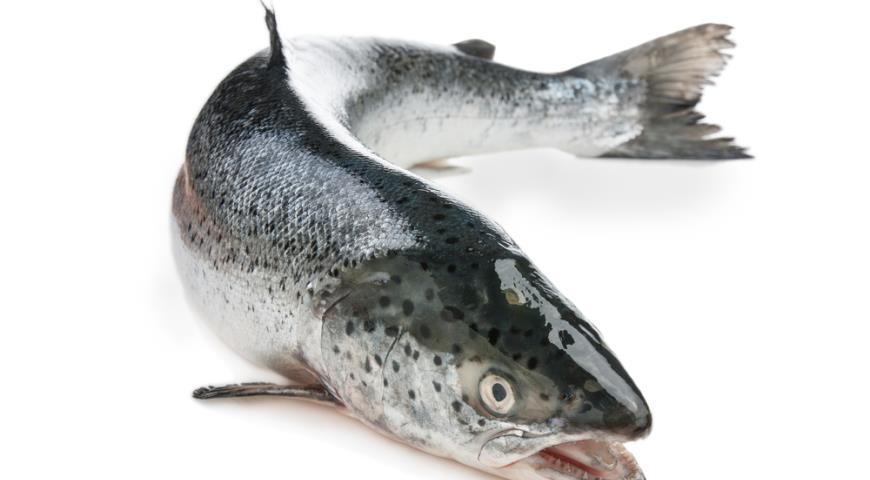

Назад
Лосось

Лосось — пресноводная и морская рыба семейства лососевых. Известен своими миграциями и вкусным мясом.
Характеристики лосося:
- Длина: до 1,5 метров
- Вес: до 45 кг
- Продолжительность жизни: до 10 лет
- Распространение: Северное полушарие, включая Северную Атлантику и Тихий океан
Полезные свойства лосося:
- Богат источником омега-3 жирных кислот
- Содержит витамины А, D, E и группы В
- Содержит йод и селен, необходимые для здоровья щитовидной железы
- Улучшает функцию сердца и сосудов
Фон